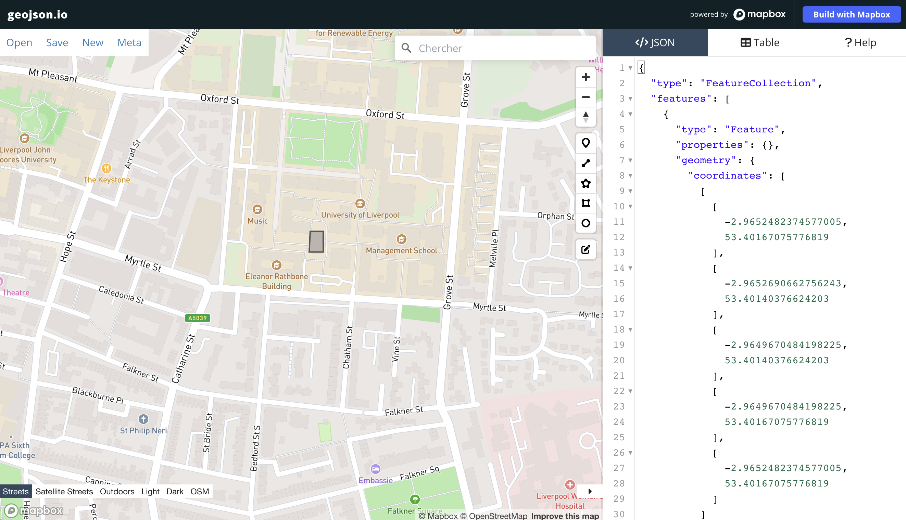
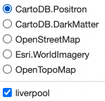
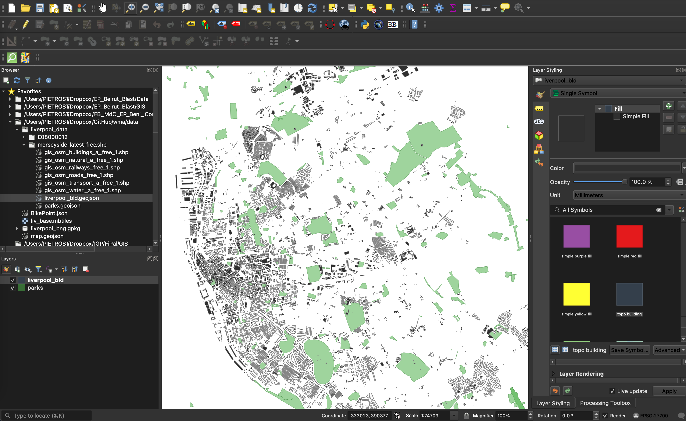
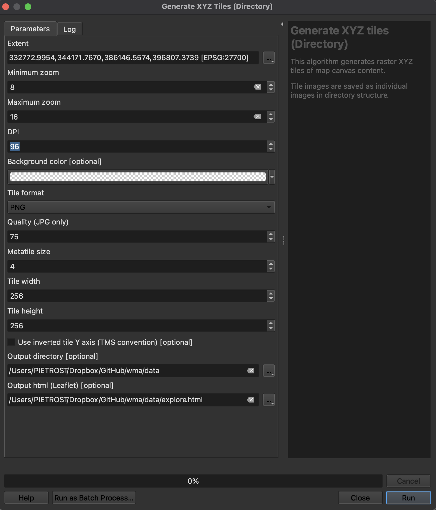
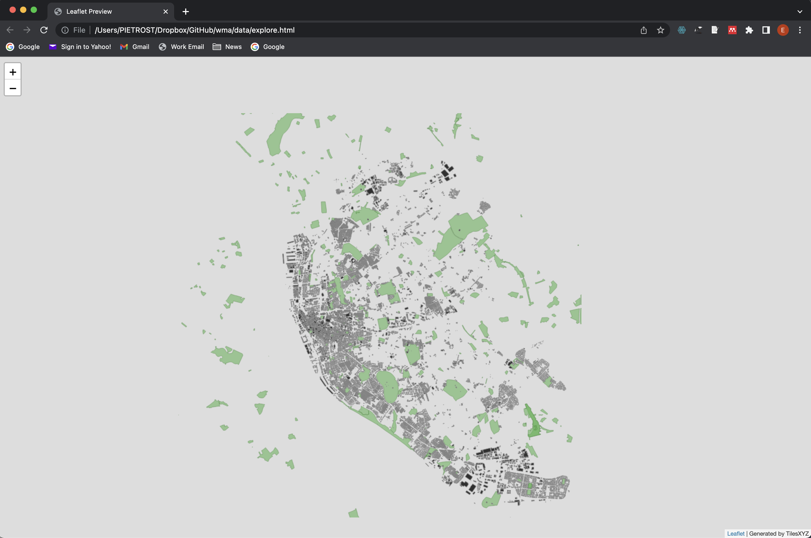
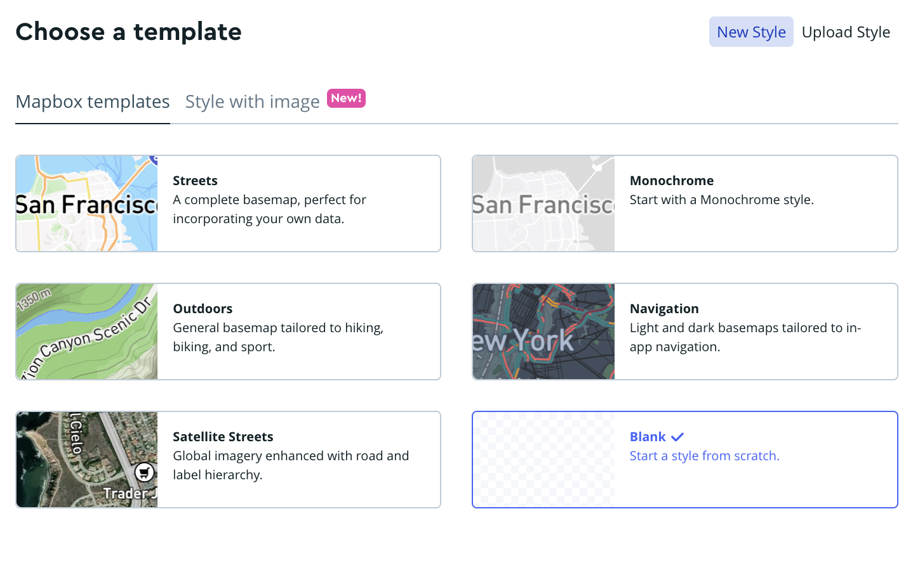
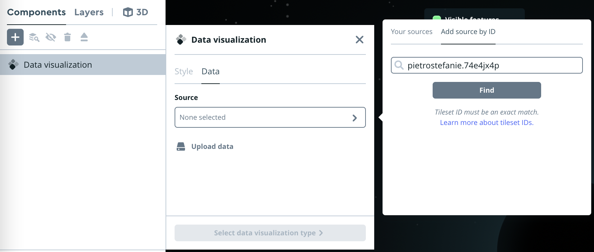

# Simple features, a standardized way to encode spatial vector data
library(sf)
# Converts Between GeoJSON and simple feature objects
library(geojsonsf) 3 Data architectures
Elisabetta Pietrostefani
Lecture: Data architectures & formats
Lab: Creating, manipulating, and integrating web geo-spatial data
3.1 Lecture
Slides can be downloaded here
3.2 Lab: Creating, manipulating, and integrating web geo-spatial data
In this lab, we will explore and familiarise with some of the most common data formats for web mapping: GeoJSON and Mbtiles. To follow this session, you will need to be able to access the following:
- The internet
- QGIS. Any version should work in this context, but if you are installing it on your computer, QGIS 3.22 is recommended
- The R libraries listed in the computational environment setup of the course.
3.2.1 GeoJSON
To get familiar with the format, we will start by creating a GeoJSON file from scratch. Head over to the following website:
In there, we will create together a small example to better understand the building blocks of this file format.

We will pay special attention to the following aspects:
- Readability
- Coordinate system
- Ability to add non-spatial information attached to each record
- How to save it as a file
EXERCISE
Create a GeoJSON file for the following data and save them to separate files:
Your five favourite spots in Liverpool
A polygon of what you consider to be the boundary of the neighbourhood where you live and the city centre of Liverpool. Name each.
A route that captures one of your favorite walks around the Liverpool region
If you are comfortable, upload the files to Microsoft Teams to share them with peers.
3.2.2 GeoJSON in R
With the files from the exercise at hand, we will then learn how to open them in R-markdown. Create a new R-markdown and save it to something you’ll remember, like web_mapping_lab_03.Rmd.
Then let’s start by calling the libraries sf and geojsonsf :
Now, place the .geojson files you have created in the same folder where you are storing the R-markdown, or somewhere reachable. For this example, we will assume that the file is called map.geojson and it is stored in the data folder, accessible from the same location where the notebook is. We can read the file as:
liverpool <- geojson_sf("data/map.geojson")We can inspect the file to see what it contains:
head(liverpool)Simple feature collection with 4 features and 0 fields
Geometry type: GEOMETRY
Dimension: XY
Bounding box: xmin: -2.977367 ymin: 53.39987 xmax: -2.954183 ymax: 53.40753
Geodetic CRS: WGS 84
geometry
1 POLYGON ((-2.965248 53.4016...
2 LINESTRING (-2.975764 53.40...
3 POINT (-2.977367 53.40753)
4 POLYGON ((-2.958036 53.4009...If you are familiar with sf objects, this is exactly it, read straight from a GeoJSON file (if you need a refresher, you can check out introduction to sf) in the Spatial Data Science book.
A point is single point geometry: POINT (5 2)
A line string is a sequence of points with a straight line connecting the points: LINESTRING (1 5, 4 4, 4 1, 2 2, 3 2)
A polygon is a sequence of points that form a closed ring without intersection. Closed means that the first and the last point of a polygon have the same coordinates: POLYGON ((1 5, 2 2, 4 1, 4 4, 1 5))
Let’s quickly plot the sf object to visualise it in R.
# Provides functions to very quickly and conveniently create interactive visualisations of spatial data.
library(mapview)
mapview(liverpool)Once read, the geojson behaves exactly like any sf objects, we can therefore operate on it and tap into the functionality from sf. For example, we can inspect the Coordinate Reference System (CRS) in which it is expressed:
st_crs(liverpool)Coordinate Reference System:
User input: 4326
wkt:
GEOGCS["WGS 84",
DATUM["WGS_1984",
SPHEROID["WGS 84",6378137,298.257223563,
AUTHORITY["EPSG","7030"]],
AUTHORITY["EPSG","6326"]],
PRIMEM["Greenwich",0,
AUTHORITY["EPSG","8901"]],
UNIT["degree",0.0174532925199433,
AUTHORITY["EPSG","9122"]],
AXIS["Latitude",NORTH],
AXIS["Longitude",EAST],
AUTHORITY["EPSG","4326"]]Using some of sf’s functionality. We can reproject it to express it in metres:
# Transform to British National Grid
liverpool_bng <- st_transform(liverpool, st_crs(27700))
# To check the new projection
st_crs(liverpool_bng)Coordinate Reference System:
User input: EPSG:27700
wkt:
PROJCRS["OSGB36 / British National Grid",
BASEGEOGCRS["OSGB36",
DATUM["Ordnance Survey of Great Britain 1936",
ELLIPSOID["Airy 1830",6377563.396,299.3249646,
LENGTHUNIT["metre",1]]],
PRIMEM["Greenwich",0,
ANGLEUNIT["degree",0.0174532925199433]],
ID["EPSG",4277]],
CONVERSION["British National Grid",
METHOD["Transverse Mercator",
ID["EPSG",9807]],
PARAMETER["Latitude of natural origin",49,
ANGLEUNIT["degree",0.0174532925199433],
ID["EPSG",8801]],
PARAMETER["Longitude of natural origin",-2,
ANGLEUNIT["degree",0.0174532925199433],
ID["EPSG",8802]],
PARAMETER["Scale factor at natural origin",0.9996012717,
SCALEUNIT["unity",1],
ID["EPSG",8805]],
PARAMETER["False easting",400000,
LENGTHUNIT["metre",1],
ID["EPSG",8806]],
PARAMETER["False northing",-100000,
LENGTHUNIT["metre",1],
ID["EPSG",8807]]],
CS[Cartesian,2],
AXIS["(E)",east,
ORDER[1],
LENGTHUNIT["metre",1]],
AXIS["(N)",north,
ORDER[2],
LENGTHUNIT["metre",1]],
USAGE[
SCOPE["Engineering survey, topographic mapping."],
AREA["United Kingdom (UK) - offshore to boundary of UKCS within 49°45'N to 61°N and 9°W to 2°E; onshore Great Britain (England, Wales and Scotland). Isle of Man onshore."],
BBOX[49.75,-9,61.01,2.01]],
ID["EPSG",27700]]When we inspected our geojson with head(liverpool) we noted that the spatial data is stored in the following format: POINT (-2.977367 53.40753). This is called “well known text” (wkt) and is a representation that spatial databases like PostGIS use as well. Another way to store spatial data as text for storage or transfer, less (human) readable but more efficient is the “well known blurb” (wkb). In R, you can transform wkt data into wkb data using the library wellknownand the function wkt_wkb.
library(wellknown) # Convert Between 'WKT' and 'GeoJSON'
# Load the WKT representation of the point and convert the WKT representation into WKB format
wkt <- wkt_wkb("POINT (-2.977367 53.40753)")
# Print the WKB data
wkt [1] 01 01 00 00 00 5e 84 29 ca a5 d1 07 c0 c7 11 6b f1 29 b4 4a 40Another benefit of reading data in R is we can use its analytical capabilities. For example, we can calculate the length of a line our data frame:
# Extract the second row, which is a line, and reconvert to sf object
liverpool_walk <- st_sf(liverpool_bng[2,])
# Calculate the length of the linestring
st_length(liverpool_walk)800.678 [m]Given the the line is expressed in metres (check out EPSG:27700), we can conclude the line spans about 800.678 metres,
EXERCISE
Read the
GeoJSONcreated for your favorite walks in Liverpool and calculate their lengthPro: explore the
R documentationand try to extract the area for the polygon covering your neighbourhood
Once you are happy with the data as we will hypothetically need it, you can write it out to any other file format supported in sf. For example, we can create a Geopackge file with the same information. For this, we can use the function st_write. The file name is taken as the data source name. The default for the layer name is the basename (filename without path) of the the data source name. See an example below:
## Writing layer `liverpool_bng' to data source `liverpool_bng.gpkg' using driver `Geopackge'
st_write(liverpool_bng, dsn = "data/liverpool_bng.gpkg", layer = "data/liverpool_bng.gpkg", driver = "GPKG", delete_dsn = TRUE)Deleting source `data/liverpool_bng.gpkg' using driver `GPKG'
Writing layer `data/liverpool_bng.gpkg' to data source
`data/liverpool_bng.gpkg' using driver `GPKG'
Writing 4 features with 0 fields and geometry type Unknown (any).R’s sf cheatsheet is a good reference for manipulation operations/spatial predicates with simple features.
3.2.3 Tilesets and Mbtiles
In this section we will dive into the concept of tiles to understand why they have been so transformative in the world of web mapping. We have already seen several tilesets. If you scroll back up where we used the function mapview, you will see that is it plotting out points, polygons and linestrings on different tileset options integrated in the library.

We will learn how to prepare a map that is styled in QGIS and then saved as either an .mbtiles file of a structured folder with tiles that allows to serve it over the web in efficient ways. Finally we will explore the tileset built using the JavaScript library Leaflet.js.
Before we get started, let’s get all the required pieces together:
- Fire up QGIS 3
- Download the data here
Build your basemap
Basemaps are maps that provide context to more specific spatial data you might want to present. For example, if you have a set of points that represent events in space, it might be hard to understand their distribution unless you put them in the context of a more complete geography. A basemap is a quick solution in this case.
Explore the layers provided in the GeoData Pack and select those you want to use for your basemap. Once ready, go ahead and add them as layers in QGIS. Tweak colors, transparencies, linewidths, etc. until you get a map you are happy with.

Create a tileset for your map
Once ready to build the basemap from your created map, head over to Processing Toolbox and select the Raster tools --> Generate XYZ Tiles (Directory). You can start with the Directory option. Pick parameters and, when everything is ready, hit Run. Depending on your settings, this will take some time, be patient.

When finished, QGIS will have created a folder with a particular structure, that contains all the tiles required to serve your basemap. You can peak into them to find they are really just images of different parts of your map at different zoom levels.
Explore your basemap with Leaflet.js
If you store your basemap in a folder, QGIS will also generate for you a HTML file with a bit of JavaScript code that will allow you to explore the tileset in a browser. Play with it a little bit and familiarise with the look and feel of it.

If you feel adventurous, you can also peak into the code that makes the web map possible. To do that, you will need to either open the HTML file on a text editor, or inspect the source code from the browser (in Chrome, for example, this can be accessed through Right Click --> Inspect.
Create a .mbtiles file for easy transport
Finally, you can recreate the process above but in this case choosing the MBTiles instead of the Directory option. This will make QGIS generate the same tileset but, instead of storing it directly on a folder, it will save it as a SQLite database in with the .mbtiles format. This is easier to move from one environment to another and is also supported by most web mapping platforms, such as Mapbox.
.mbtiles in R
For this next section, you will need to register for a MapBox account. here.
Following from the previous exercise, save a file of Liverpool buildings as a geojson and call it buildings_liverpool.geojson.
# R Interface to 'Mapbox' Web Services
library(mapboxapi)Usage of the Mapbox APIs is governed by the Mapbox Terms of Service.
Please visit https://www.mapbox.com/legal/tos/ for more information.# Mapdeck is a combination of Mapbox and Deck.gl. Deck.gl is one of the most user-friendly WebGL javascript libraries and can produce some beautiful maps. And it integrates nicely with Mapbox.
library(mapdeck)
#Tools for Working with URLs and HTTP
library(httr)You can use tippecanoe to make a dynamic .mbtiles files in R, just like the XYZ function in QGIS. This is useful to visualize large data appropriately at any zoom level. sf objects can also be used as input! This requires you to install tippecanoe on your machine separately first. See instructions here.
# Using tippecanoe to create .mbtiles of building footprint liverpool
tippecanoe(input = "data/buildings_liverpool.geojson",
output = "data/buildings_liverpool.mbtiles",
layer_name = "buildings_liverpool")You can then upload the generated tilesetwith the upload_tiles() function to your Mapbox account (requires a Mapbox secret access token to be set as an environment variable). Or you can upload this manually.
Head over to Mapbox Studio
Start a
New Styleand chose a template (Monochrome, blank etc.) Upload the data and style it

It should look like a nicer version of this:

When you’ve styled it, bring it back into your R project
# Define your mapbox token
#my_token <- "PLACE YOUR MAPBOX TOKEN HERE and UNCOMMENT"
# Into R with mapdeck by referencing the style ID.
mapdeck(token = my_token,
# Replace the style with the one you've created
style = "mapbox://styles/pietrostefanie/cle4dgs2o002d01tft37b5ndg",
zoom = 10,
location = c(-2.973286, 53.406872))3.3 References
Pebesma, E. & Bivand, R. (2022) Spatial Data Science with applications in R
Chapter 3 of the GDS book (in progress) covers traditional and more modern approaches to represent Geography as data.
Kitchin, R. (2014). The data revolution: Big data, open data, data infrastructures and their consequences. Sage.
Maptiler.com documents on map tiles and map vector tiles.